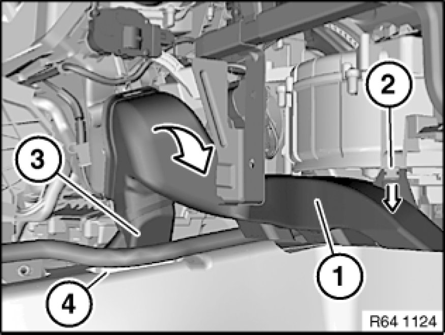
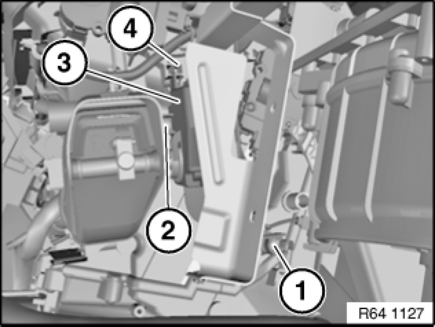
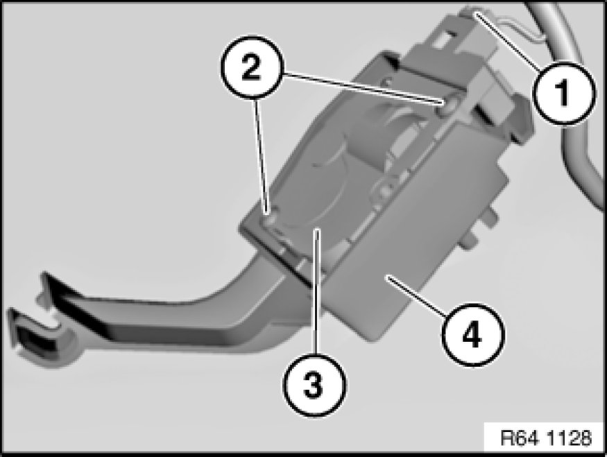

64 11 839 Replacing Servodrive for Footwell Flap (Automatic A/C)
64 11 839 - Replacing servodrive for footwell flap (automatic A / C)

Important!
Servomotors must be re-addressed in the event of replacement!
Addressing can only be carried out with the BMW diagnosis system.
Service functions:
- Body
- Heating and A/C function
- Flap motors
- Re-address flap motors

Necessary preliminary tasks:
- Remove right glovebox with housing 51 16 366 Removing and Installing Right Glovebox With Housing
- Remove storage compartment 51 16 200 Removing and Installing Storage Compartment

Detach right footwell heating duct (1) in area (2) in direction of arrow.
Detach right footwell heating duct (1) with adapter (3) from heater/air conditioner and remove in direction of arrow from right rear compartment heating duct (4).

Release screws (1) and (2).
Remove bracket (3) with servodrive for footwell flap from heater/air conditioner (4).
Installation Note:
Make sure bracket (3) is correctly seated on heater/air conditioner (4).

Unfasten plug connection (1) and disconnect.
Release screws (2).
Remove servodrive for footwell flap (3) from bracket (4).